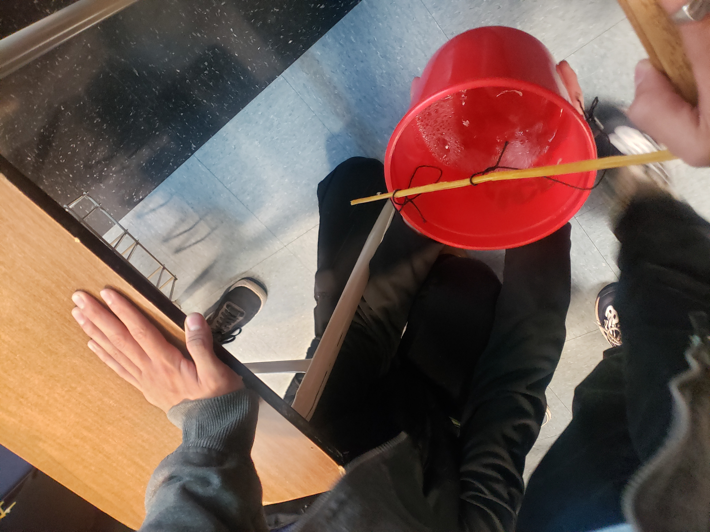

This week we completed our 2nd design and tested it. It did not go well because part of our bridge snapped beforehand. We created a 3rd design which had every component with two pieces of spaghetti together. However we are saving this design for later and are working on a bridge which is just 20 pieces all clumped together.
*12/12/2022 - 12/16/2022*

We continued our spaghetti bridge project. Our 3rd iteration was just a bunch of spaghetti noodles glued together into a rod to provide maximum support and strength. It seemed to work the best. Our 4th iteration was a fence-like bridge with lots of triangles for support. It looked better, but didn't hold as much as the 3rd stick iteration.
*12/19/2022 - 12/21/2022*
We concluded our spaghetti bridge project. We decided to use the straight stick design again, since it held the most water out of all of our iterations. It held up around 3 cups of water and only weighed around 16 grams, so it scored pretty well.